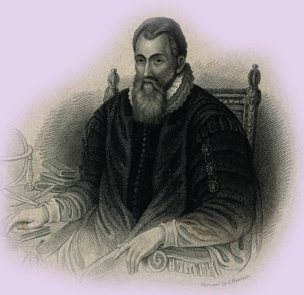
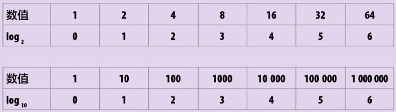
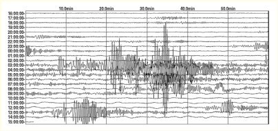
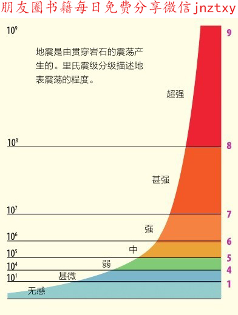
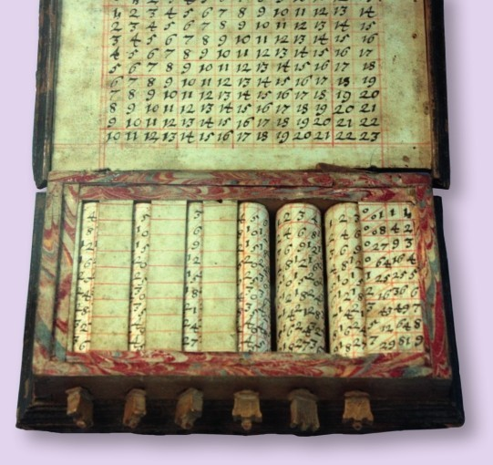
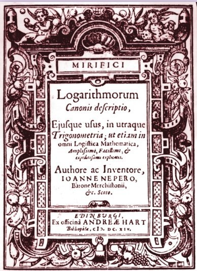
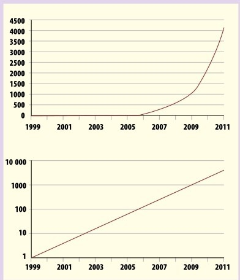
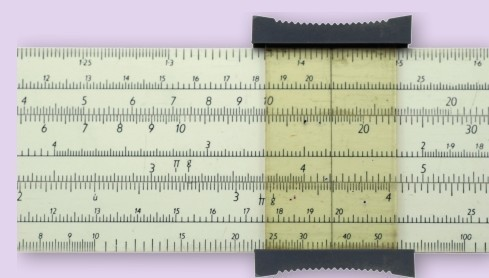

对数常被写为“logx”的形式，它是一种把复杂的乘法转化成加法的运算方式。在日常生活中，几乎随处可见对数的运算。

苏格兰的地主约翰·纳皮尔于1614年发明了对数运算。
对数运算是指数运算的逆运算。正如牧师拉赫·塞萨和那个被愚弄的国王所发现的（见第76页），指数越大，幂增长得越快。
指数增长
随着指数的逐次增大，增长一个相同比率数值的现象称为指数增长。想象这一现象的一个简单方式是考虑一个大数量级，或者以10为底的增长情况。此时容易理解，因为我们使用的数字系统是十进制位值制：由个（100）、十（101）、百（102）、千（103）等构建整个数字王国。一百（102）是十（101）的10倍，一千（103）是十（101）的100倍，依此类推，随着数位向左移动，每个位置代表的位值逐项10倍增长。以十位数为例，只要数位向左移动5位，数就能增长为百万，只要移动11位就能增长到万亿。向左每移动一位，数都增长10倍，因此，相邻两数之间的差变得越来越大，趋于无穷。这形成一个等比数列（见第76页），而且朝反方向看，这种指数变化仍然见效，只是每位的数值除以这个公比。反方向看时，数列递减趋于0（但是始终达不到0）。

左边的表分别表示一些数在以2为底数和以10为底数时的对数取值情况。每一个数关于某个底数的对数恰好等于对底数做乘方运算转化为这个数时所需要的指数。
地震震级
地震是地球上最为剧烈的地质活动之一。地震产生的撕裂地表的力量是用里氏震级来度量的。其实，震级为1的轻微地震每30秒就发生一次，但是，我们人类自身察觉不到，而8级及以上震级的地震发生的频率一年可能不到一次。里氏震级描述地面上下震荡的程度，是一个对数值，也就是说，9级地震并不是只比1级地震增强8倍的震荡程度，而是1亿（108）倍的剧烈程度！

当一次强震传达到地表时，固体建筑物将破裂。

对数运算的精妙
处理成批以指数增长的数值是很困难的，而对数运算就把这事简单化了。之所以简单了，关键在于对数运算让我们能只计算这些数的幂，而不是这些大数本身。这也就是说，即使处理很大的数，比如1万亿，我们也只需要对12进行运算，而12相对于1万亿自然简单很多很多。

纳皮尔乘除器——由约翰·纳皮尔发明的计算大数乘法的简易计算器（见第114页）。
理性与数
在更细致观察对数之前，我们先了解一下对数定义的来源。对数的发明归功于苏格兰数学家约翰·纳皮尔。1614年，他出版了一本著作，名为《奇妙对数规则的说明》，是对奇妙的对数原理的解析。我们可以猜测纳皮尔不是一个非常谦逊的人，但是他确实有足够的理由自豪于他的这项发明。他把对数取名为“logarithmorum”，这个词结合了“logos”和“arithmos”两个词，前者意为“理性”，而后者意为“数”。

约翰·纳皮尔关于对数的著作《奇妙对数规则的说明》扉页。
以10为底
多年后，纳皮尔的对数系统由他的英国同行亨利·布里格斯进行了改进。布里格斯关注以10为底的对数，而这正是我们现在常用的。以10为底的对数，我们现在称为常用对数，记作log10，因此， 100取对数的值是2，即log10100=2。类似 的，log101000=3及log1010 000=4。这种表达大数的方式，使得我们能够把大数之间复杂的乘法运算转变为简单的加法运算。比如100×1000×10 000的计算不再困难，你只需把这3个数的对数值相加，即2+3+4=9，再分析知道9是1 000 000 000以10为底的对数，进而得到乘积为10亿。这个过程中，我们只是把3个数的指数做了加法，与幂的运算法则相同（见第78页）。
神奇的公鸡
约翰·纳皮尔是一位容易让人印象深刻的人，他个子很高，经常穿黑色如巫师袍的长袍。他从爱丁堡外出时总是带着一只黑毛的公鸡，许多人怀疑他把这只公鸡用于巫术中。传说纳皮尔利用他的声誉和这只公鸡侦破犯罪行为。有一次，他怀疑他的一名仆人偷窃，于是，他把所有仆人召集到一个密闭的房间外，并告诉他们房间内有一只神奇的公鸡。仆人被要求轮流进屋去抓这只公鸡，然后放了鸡，离开房间。公鸡的神力会观察出哪个仆人是小偷。而这个方法真的奏效了。事实上，纳皮尔事先在鸡身上撒了些烟灰，当仆人抱起鸡时，手上就会染上烟灰而变黑。而窃贼不敢抱鸡，因此，白净的双手就暴露出窃贼的身份。
在如纳皮尔一样的天才手中，黑公鸡成了一个强大的工具。
对数表
上面的例子考查的数都是10 的整数次乘方形式。其他的数呢？比方说， log105等于多少呢？答案是0.698 97。换句话说，100698 97=5。由此也可以知道log10500=2.698 97。这是因为根据对数性质拆开计算，log10500=log105+log1010 0=0.698 97+2。但是，大部分数的对数值很难计算。这也是布里格斯在纳皮尔的帮助下，于1617年发表对数表，注明1000以内所有数的对数值的原因。表中每一个数都精确到小数点后14位——精确的程度让人叹为观止。到1628年，布里格斯和他的合作者发表了常用对数表，列出了100 000以内所有数的对数值。
对数计算
运用对数表可以使得大数的乘法计算变得简单。比如，计算123×654。从对数表上可以查得log10123=2.089 91…和log10654=2.815 58…， 求2.089 91…+ 2.815 58…=4.905 49…。查表可知， 4.905 49…是80 442以10为底的对数，因此123与654的乘积为80 442。读者可以用计算器检验这个结果。计算器的出现使上述计算方式不再被人们运用，但直到20世纪80年代，教师还是普遍使用算尺为学生讲授这种计算方法。正如对数表可以使得我们把两个数的乘法转化为它们的对数值的加法，算尺是一把标有数字的对数标尺，在标尺上找到一个数的位置，沿标尺移动另一个数在标尺上的长度，即做一个加法，最终所落在的位置就显示出这两个数的乘积。第一把算尺是英国数学家威廉·奥特瑞德于17世纪20年代早期发明的。
下面两幅图描述了同一个数列的不同呈现形式。上图显示当数列呈指数增长时曲线呈上升趋势。下图显示当取完对数后，新的对数值数列呈直线型增长。

算尺是一种运用对数的老式计算器。艾萨克·牛顿、阿尔伯特·爱因斯坦、美国国家航空航天局的科学家们和学校的学生都曾使用过算尺，直到它被廉价的计算机处理器所取代。

其他基数
纳皮尔最初发明对数时并不是以10为底，而是用了一个更加复杂的数e（见第138页：数e）。但其实，对数运算可以以任何非1正数作为基数。我们将在第131页具体介绍基数的含义，而我们已经了解十进制计数，其实就是用0至9这10个数字为基本元素构建整个数字体系。二进制则是用两个数字0和1，五进制是用0至4这5个数字，等等。每个数的对数值随着基数不同而不同。如log10100=2，而log24=2。这是因为102=100，而22=4。有趣的是，任何基数的平方根的对数值都是0.5。例如，4的平方根是2（见第87页），所以，log42=0.5。
对数的应用
对数运算在代数之外也广泛应用，这是因为它使得对许多实际应用中的数处理起来更简单。从化学上测量酸碱度的p H试纸到地震的震级（见第99页的图），以及声音的分贝标尺，都依赖于对数。所有这些现象的现实意义天差地别。一个数据可能是另一个数据的10亿倍甚至万亿倍，而此时对数正好派上用场。比如，p H试纸测量溶液中氢离子的浓度。最强的酸性溶液p H为0，也就是说溶液中含有大量的氢离子。而p H为1则说明氢离子浓度缩小到了最强酸溶液中的1/10。p H是这个差距的对数值：log1010=1。跟酸相对的概念是碱。当把酸碱混合时，会发生剧烈的反应。最强的碱性溶液含有的氢离子数是强酸的0.000 000 000 000 01倍，简单地说，它们的p H为14。可见，得益于对数运算，化学家测量酸碱度的工作变得更为便利。
参见：
▶乘方，第76页
▶二进制与其他进制，第130页
▶数e，第138页
原理
对数运算对某些人来说是一种很难的运算。请观察分析下面的例题，了解其运算规则。
1000=103
故 log101000=3
1 000 000=106
故 log101 000 000=6
4=22 故 log24=2
1=100 故 log101=0
反之：
2=log10100 故100=102
3=log28 故8=23
0.5=log93 故90.5=3